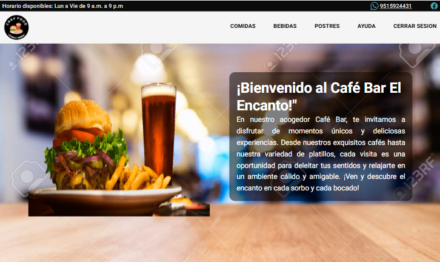
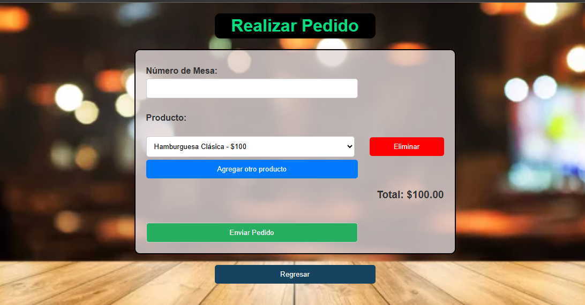
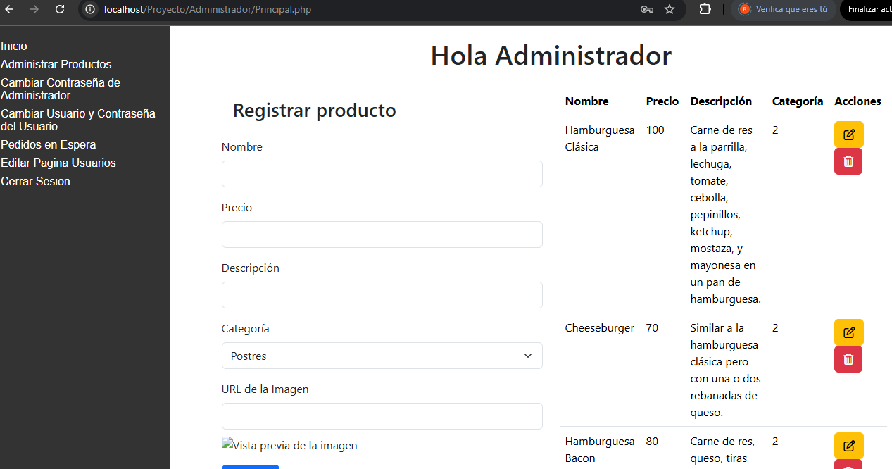

Este sistema de pedidos está diseñado para ofrecer una experiencia de compra cómoda, rápida e intuitiva. Los usuarios pueden explorar un catálogo organizado por categorías como postres, comidas y bebidas.
El cliente puede realizar pedidos de varios Productos y el sistema se encarga de ir sumando el precio de los productos y devolver el total a pagar.
El Administrador del sistema puede agregar, eliminar y actualizar los productos que estan en venta asi como modificar algunos datos de la pagina web de los usuarios. En el panel de Adnimistración se pueden ver los pedidos que estan en espera asi como cambiar los credenciales con el que ingresa el usuario.
